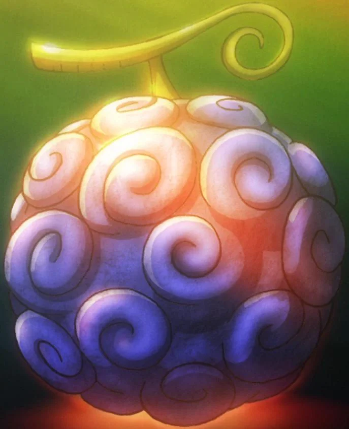

Hito Hito no Mi, Modelo: Nika
Usuário: Monkey D. Luffy
Fruta mitológica que dá ao usuário um corpo de borracha com liberdade absurda, considerada a mais "ridícula" e poderosa.
Usuário: Monkey D. Luffy
Fruta mitológica que dá ao usuário um corpo de borracha com liberdade absurda, considerada a mais "ridícula" e poderosa.
Usuário: Barba Branca / Barba Negra
Permite criar terremotos que podem destruir o mundo. Considerada a Paramecia mais destrutiva.
Usuário: Marshall D. Teach (Barba Negra)
Uma Logia que manipula a gravidade e a escuridão, capaz de anular os poderes de outras Frutas do Diabo.

Usuário: Kaido
Fruta Zoan mitológica que transforma o usuário em um gigantesco dragão azul com poderes devastadores.

Usuário: Trafalgar D. Water Law
Permite realizar cirurgias e manipular tudo dentro de uma área esférica. Considerada de valor inestimável.

Usuário: Akainu (Sakazuki)
Permite gerar e controlar magma com poder ofensivo brutal. Supera a Mera Mera no Mi em poder.

Usuário: Kizaru (Borsalino)
Concede velocidade e ataques baseados em luz, tornando o usuário quase intocável em combate.

Usuário: Sugar
Permite transformar qualquer pessoa em brinquedo e apagar sua existência da memória dos outros.

Usuário: Bartholomew Kuma
Dá ao usuário a habilidade de repelir qualquer coisa — ataques, dor, até pessoas — com imensa velocidade e precisão.

Usuário: Ace / Sabo
Fruta do tipo Logia que permite criar, controlar e se transformar em fogo. Extremamente poderosa e simbólica na história.